전기기사 (2012-05-20 기출문제)
1과목: 전기자기학
1. 평균길이 1[m], 권수 1000회의 솔레노이드 코일에 비투자율 1000의 철심을 넣고 자속밀도 1[wb/m2]을 얻기 위해 코일에 흘려야 할 전류는 몇 [A]인가?
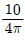
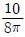
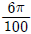
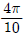
(정답률: 71%)

2. 정전 에너지, 전속밀도 및 유전상수 εr의 관계에 대한 설명 중 옳지 않은 것은?
- 동일 전속밀도에서는 εr이 클수록 정전에너지는 작아진다.
- 동일 정전에너지에서는 εr이 클수록 전속밀도가 커진다.
- 전속은 매질에 축적되는 에너지가 최대가 되도록 분포된다
- 굴절각이 큰 유전체는 εr이 크다.
(정답률: 67%)
3. 전기 쌍극자에 의한 등전위면을 극좌표로 나타내면? (단, k는 상수이다.)
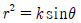
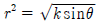
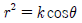
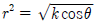
(정답률: 61%)
4. 유전체에서 변위 전류를 발생하는 것은?
- 분극전하밀도의 공간적 변화
- 분극전하밀도의 시간적 변화
- 전속밀도의 공간적 변화
- 전속밀도의 시간적 변화
(정답률: 69%)
5. 면전하 밀도가 ρs[C/m2]인 무한히 넓은 도체판에서 R[m]만큼 떨어져 있는 점의 전계의 세기 [V/m]는?
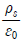
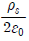
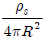
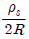
(정답률: 67%)
6. 무한히 넓은 두 장의 도체판을 d[m]의 간격으로 평행하게 놓은 후, 두 판 사이에 V[V] 의 전압을 가한 경우 도체판의 단위 면적당 작용하는 힘은 몇 [N/m2]인가?(오류 신고가 접수된 문제입니다. 반드시 정답과 해설을 확인하시기 바랍니다.)
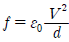
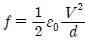
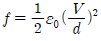
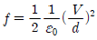
(정답률: 69%)
7. 일반적으로 자구를 가지는 자성체는?
- 상자성체
- 강자성체
- 역자성체
- 비자성체
(정답률: 76%)
8. 그림과 같이 평행판 콘덴서에 교류전원을 접속할 때 전류의 연속성에 대하여 성립하는 식은? (단, E : 전계, D : 전속밀도, ρ : 체적전하밀도, i : 전도전류 밀도, B : 자속밀도, t : 시간이다.)
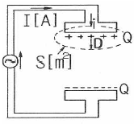
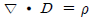
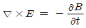
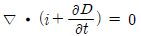
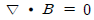
(정답률: 56%)
9. 그림에서 ℓ=100[cm], S=10[cm2], μs=100, N=1000 회인 회로에서 전류 I=10[A]를 흘렸을 때 저축되는 에너지는 몇 [J]인가?
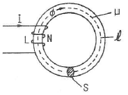
- 2π×10-1
- 2π×10-2
- 2π×10-3
- 2π
(정답률: 62%)
10. 맥스웰의 전자방정식에 대한 의미를 설명한 것으로 잘못된 것은?
- 자계의 회전은 전류밀도와 같다.
- 전계의 회전은 자속밀도의 시간적 감소비율과 같다.
- 단위체적 당 발산 전속수는 단위 체적 당 공간전하 밀도와 같다.
- 자계는 발산하며, 자극은 단독으로 존재한다.
(정답률: 76%)
11. 전자파의 전파속도 [m/s]에 대한 설명 중 옳은 것은?
- 유전율에 비례한다.
- 유전율에 반비례한다.
- 유전율과 투자율의 곱의 제곱근에 비례한다.
- 유전율과 투자율의 곱의 제곱근에 반비례한다.
(정답률: 73%)
12. 액체 유전체를 포함한 콘덴서 용량이 C[F] 인 것에 V[V]의 전압을 가했을 경우에 흐르는 누설전류는 몇 [A]인가?(단, 유전체의 유전율은 ε, 고유저항은 ρ[Ωㆍm]이다.)
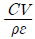
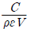
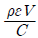
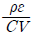
(정답률: 79%)
13. 환상철심에 권수 3000회의 A코일과 권수 200회인 B코일이 감겨져있다. A 코일의 자기 인덕턴스가 360[mH]일 때, A, B 두 코일의 상호 인덕턴스 [mH]는? (단, 결합계수는 1이다.)
- 16
- 24
- 36
- 72
(정답률: 76%)
14. 강자성체의 자속밀도 B의 크기와 자화의 세기 J의 크기 사이에는 어떤 관계가 있는가?
- J는 B와 같다.
- J는 B보다 약간 작다.
- J는 B보다 약간 크다.
- J는 B보다 대단히 크다.
(정답률: 67%)
15. 그림과 같이 비투자율이 μs1, μs2인 각각 다른 자성체를 접하여 놓고 θ1을 입사각이라 하고, θ2 를 굴절각이라 한다. 경계면에 자하가 없는 경우 미소 폐곡면을 취하여 이곳에 출입하는 자속수를 구하면?
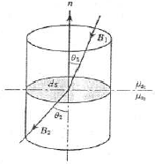
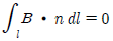
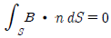
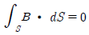
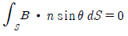
(정답률: 53%)
16. 그림과 같이 한 변의 길이가 ℓ[m]인 정6각형 회로에 전류 I[A]가 흐르고 있을 때 중심 자계의 세기는 몇 [A/m]인가?
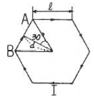
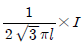
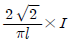
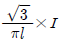
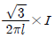
(정답률: 70%)
17. 그림과 같이 면적 S[m2]인 평행판 콘덴서의 극판 간에 판과 평행으로 두께 d1[m], d2[m], 유전율 ε1[F/m], ε2[F/m] 의 유전체를 삽입하면 정전용량 [F]은?
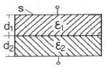
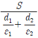
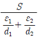
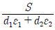
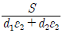
(정답률: 70%)
18. 두 개의 길고 직선인 도체가 평행으로 그림과 같이 위치하고 있다. 각 도체에는 10[A]의 전류가 같은 방향으로 흐르고 있으며, 이격거리는 0.2[m]일 때 오른쪽 도체의 단위 길이당 힘은? (단, ax, az는 단위 벡터이다.)
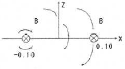
- 10-2(-ax)[N/m]
- 10-4(-ax)[N/m]
- 10-2(-az)[N/m]
- 10-4(-az)[N/m]
(정답률: 50%)
19. 패러데이의 법칙에 대한 설명으로 가장 알맞은 것은?
- 전자유도에 의하여 회로에 발생되는 기전력은 자속 쇄교수의 시간에 대한 증가율에 반비례한다.
- 전자유도에 의하여 회로에 발생되는 기전력은 자속의 변화를 방해하는 방향으로 기전력이 유도된다.
- 정전유도에 의하여 회로에 발생하는 기자력은 자속의 변화 방향으로 유도된다.
- 전자유도에 의하여 회로에 발생되는 기전력은 자속 쇄교수의 시간 변화율에 비례한다.
(정답률: 64%)
20. 대전된 도체의 특징이 아닌것은?
- 도체에 인가된 전하는 도체 표면에만 분포한다.
- 가우스 법칙에 의해 내부에는 전하가 존재한다.
- 전계는 도체 표면에 수직인 방향으로 진행된다.
- 도체 표면에서의 전하밀도는 곡률이 클수록 높다.
(정답률: 72%)
2과목: 전력공학
21. 용량 30MVA, 33/11KV, Δ-Y 결선 변압기에 차동 보호 계전기가 설치되어 있다. 이 변압기로 30MVA 부하에 전력을 공급할 때 부하에 설치된 (ㄱ) CT의 결선방법과 (ㄴ) CT전류로 가장 적합한 것은?
- (ㄱ) Y 결선 (ㄴ) 3.9A
- (ㄱ) Y 결선 (ㄴ) 6.8A
- (ㄱ) Δ결선 (ㄴ) 3.9A
- (ㄱ) Δ결선 (ㄴ) 6.8A
(정답률: 35%)
22. 그림과 같은 전력 계통에서 A점에 설치된 차단기의 단락 용량 [MVA]은? (단, 각 기기의 % 리액턴스는 발전기 G1, G2는 정격용량 15MVA 기준 각각 15%이고, 변압기는 정격용량 20MVA 기준 8%, 송전선은 정격용량 10MVA기준 11%이며, 기타 다른 정수는 무시한다.)(오류 신고가 접수된 문제입니다. 반드시 정답과 해설을 확인하시기 바랍니다.)
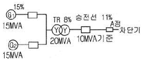
- 5
- 50
- 500
- 5000
(정답률: 57%)
23. 송전선로에서 이상전압이 가장 크게 발생하기 쉬운 경우는?
- 무부하 송전선로를 폐로하는 경우
- 무부하 송전선로를 개로하는 경우
- 부하 송전선로를 폐로하는 경우
- 부하 송전선로를 개로하는 경우
(정답률: 73%)
24. 3000kW, 역률80%(늦음)의 부하에 전력을 공급하고 있는 변전소의 역률을 90%로 향상시키는데 필요한 전력용 콘덴서의 용량 [kVA]은?
- 약 600
- 약 700
- 약 800
- 약 900
(정답률: 68%)
25. 각 수용가의 수용률 및 수용가 사이의 부등률이 변화할 때 수용가군 총합의 부하율에 대한 설명으로 옳은 것은?
- 수용률에 비례하고 부등률에 반비례한다.
- 부등률에 비례하고 수용률에 반비례한다.
- 부등률과 수용률에 모두 비례한다.
- 부등률과 수용률에 모두 반비례한다.
(정답률: 67%)
26. 원자로에 사용되는 감속재가 구비하여야 할 조건으로 틀린것은?
- 중성자 에너지를 빨리 감속시킬 수 있을 것
- 불필요한 중성자 흡수가 적을 것
- 원자의 질량이 클 것
- 감속능 및 감속비가 클 것
(정답률: 77%)
27. 장거리 송전선로는 일반적으로 어떤 회로로 취급하여 회로를 해석하는가?
- 분산 부하 회로
- 집중 정수 회로
- 분포 정수 회로
- 특성 임피던스 회로
(정답률: 76%)
28. 송전선로의 고장전류의 계산에 영상 임피던스가 필요한 경우는?
- 3상 단락
- 3선 단선
- 1선 지락
- 선간 단락
(정답률: 78%)
29. 조상설비에 대한 설명으로 잘못된 것은?
- 송수전단의 전압이 일정하게 유지되도록 하는 조정 역할을 한다.
- 역률의 개선으로 송전 손실을 경감시키는 역할을 한다.
- 전력 계통 안정도 향상에 기여한다.
- 이상전압으로부터 선로 및 기기의 보호능력을 가진다.
(정답률: 58%)
30. 송전 용량이 증가함에 따라 송전선의 단락 및 지락전류도 증가하여 계통에 여러 가지 장해요인이 되고 있는데 이들의 경감대책으로 적합하지 않은 것은?
- 계통의 전압을 높인다.
- 발전기와 변압기의 임피던스를 작게한다.
- 송전선 또는 모선간에 한류 리액터를 삽입한다.
- 고장 시 모선 분리 방식을 채용한다.
(정답률: 55%)
31. 비접지 방식에 대한 설명 중 옳은 것은?
- 보호 계전기의 동작이 가장 확실하다.
- 고전압 송전방식으로 주로 채택하고 있다.
- 장거리 송전에 적합하다.
- V-V 결선이 가능하다.
(정답률: 68%)
32. 1선의 저항이 10Ω, 리액턴스가 15Ω인 3상 송전선이 있다. 수전단 전압 60kV, 부하역률 0.8(lag), 부하전류 100A 라고 할 때, 송전단 전압 [kV]은?
- 61
- 63
- 81
- 83
(정답률: 57%)
33. 6.6kV 고압 배전선로(비접지 선로)에서 지락보호를 위하여 특별히 필요치 않은 것은?
- 과전류 계전기(OCR)
- 선택접지 계전기(SGR)
- 영상 변류기(ZCT)
- 접지 변압기(GPT)
(정답률: 49%)
34. 6.6kV, 60Hz, 3상 3선식 비접지식에서 선로의 길이가 10km이고, 1선의 대지정전용량이 0.0⑤[μF/km]일때 1선 지락시의 고장전류 Ig[A]의 범위로 옳은것은?
- Ig < 1
- 1 < Ig < 2
- 2 < Ig < 3
- 3 < Ig < 4
(정답률: 53%)
35. 고압고온을 채용한 기력발전소에서 채용되는 열 사이클로 그림과 같은 장치 선도의 열사이클은?
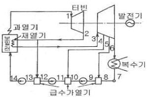
- 랭킨 사이클
- 재생 사이클
- 재열 사이클
- 재열재생 사이클
(정답률: 69%)
36. 유역 면적이 4000km2 인 어떤 발전 지점이 있다. 유역내의 연 강우량이 1400mm이고, 유출계수가 75%라고 하면 그 지점을 통과하는 연평균 유량[m3/sec]은?
- 약 121
- 약 133
- 약 251
- 약 150
(정답률: 51%)
37. 기저 부하용으로 사용하기 적합한 발전방식은?
- 석탄 화력
- 저수지식 수력
- 양수식 수력
- 원자력
(정답률: 55%)
38. 전력원선도에서 구할 수 없는 것은?
- 송수전 할 수 있는 최대 전력
- 필요한 전력을 보내기 위한 송수전 전압간의 상차각
- 선로 손실과 송전 효율
- 과도극한 전력
(정답률: 67%)
39. Δ결선의 3상 3선식 배전선로가 있다. 1선이 지락 하는 경우 건전상의 전위 상승은 지락 전의 몇 배가 되는가?
- √3
- 3
- 3√2
- 3/2
(정답률: 74%)
40. 직렬 콘덴서를 선로에 삽입할 때의 이점이 아닌것은?
- 선로의 인덕턴스를 보상한다.
- 수전단의 전압 변동률을 줄인다.
- 정태 안정도를 증가한다.
- 수전단의 역률을 개선한다.
(정답률: 59%)
3과목: 전기기기
41. 다음 ( )안에 알맞은 내용은?(오류 신고가 접수된 문제입니다. 반드시 정답과 해설을 확인하시기 바랍니다.)
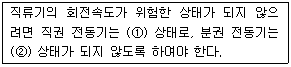
- ① 무부하, ② 무여자
- ① 무여자, ② 무부하
- ① 무여자, ② 경부하
- ① 무부하, ② 경부하
(정답률: 65%)
42. 전기자 반작용에 대한 설명으로 틀린 것은?
- 전기자 중성축이 이동하여 주자속이 증가하고 정류자편 사이의 전압이 상승한다.
- 전기자 권선에 전류가 흘러서 생긴 기자력은 계자 기자력에 영향을 주어서 자속의 분포가 기울어진다.
- 직류 발전기에 미치는 영향으로는 중성축이 이동되고 정류자 편간의 불꽃 섬락이 일어난다.
- 전기자 전류에 의한 자속이 계자 자속에 영향을 미치게 하여 자속 분포를 변화시키는 것이다.
(정답률: 59%)
43. 정격 5[kw], 100[V], 50[A], 1500[rpm]의 타여자 직류 발전기가 있다. 계자전압 50[V], 계자전류 5[A], 전기자 저항 0.2[Ω]이고 브러시에서 전압 강하는 2[V]이다. 무부하시와 정격부하시의 전압차는 몇 [V]인가?
- 12
- 10
- 8
- 6
(정답률: 50%)
44. 유도 전동기의 2차측 저항을 2배로 하면 최대 토크는 몇 배로 되는가?
- 3배
- 2배
- 변하지 않는다.
- 1/2배
(정답률: 75%)
45. 사이리스터의 래칭 전류에 관한 설명으로 옳은 것은?
- 게이트를 개방한 상태에서 사이리스터 도통 상태를 유지하기 위한 최소전류
- 게이트 전압을 인가한 후에 급히 제거한 상태에서 도통 상태가 유지되는 최소의 순 전류
- 사이리스터의 게이트를 개방한 상태에서 전압이 상승하면 급히 증가하게 되는 순 전류
- 사이리스터가 턴온하기 시작하는 전류
(정답률: 56%)
46. 변압기의 성층철심 강판 재료의 규소 함유량은 대략 몇 [%]인가?
- 8
- 6
- 4
- 2
(정답률: 58%)
47. 1차 전압 3300[V], 권수비가 30인 단상 변압기로 전등 부하에 20[A]를 공급할 때의 입력 [kW]은?
- 2.2
- 3.3
- 6.6
- 9.9
(정답률: 62%)
48. 단상 변압기에서 전부하의 2차 전압은 100[V]이고, 전압 변동률은 3[%]이다. 1차 단자전압[V]은? (단, 1차, 2차 권선비는 20:1 이다. )
- 1940
- 2060
- 2260
- 2360
(정답률: 70%)
49. 동기 전동기에서 감자작용을 할 때는 어떤 경우인가?
- 공급 전압보다 앞선 전류가 흐를 때
- 공급 전압보다 뒤진 전류가 흐를 때
- 공급 전압과 동상 전류가 흐를 때
- 공급 전압에 상관없이 전류가 흐를 때
(정답률: 69%)
50. 2방향성 3단자 사이리스터는 어느 것인가?
- SCR
- SSS
- SCS
- TRIAC
(정답률: 67%)
51. 3상 분권 정류자 전동기인 슈라게 전동기의 특성은?
- 1차 권선을 회전자에 둔 3상 권선형 유도 전동기
- 1차 권선을 고정자에 둔 3상 권선형 유도 전동기
- 1차 권선을 고정자에 둔 3상 농형 유도 전동기
- 1차 권선을 회전자에 둔 3상 농형 유도 전동기
(정답률: 47%)
52. 3상 유도 전동기가 경부하에서 운전 중 1선의 퓨즈가 잘못되어 용단되었을 때는?
- 속도가 증가하여 다른 선의 퓨즈도 용단된다.
- 속도가 늦어져서 다른 선의 퓨즈도 용단된다.
- 전류가 감소하여 운전이 얼마동안 계속된다.
- 전류가 증가하여 운전이 얼마동안 계속된다.
(정답률: 48%)
53. 유도 전동기의 2차 효율은? (단, s는 슬립이다.)
- 1/s
- s
- 1-s
- s2
(정답률: 75%)
54. 15[kW] 3상 유도전동기의 기계손이 350[W], 전부하시의 슬립이 3[%]이다. 전부하시의 2차 동손은 약 몇 [W]인가?
- 523
- 475
- 411
- 365
(정답률: 58%)
55. 60[Hz] 6극 10[kW]인 유도전동기가 슬립 5[%]로 운전할 때 2차의 동손이 500[W]이다. 이 전동기의 전부하시의 토크[kgㆍm]는?
- 약 4.3
- 약 8.5
- 약 41.8
- 약 83.5
(정답률: 53%)
56. 동기 발전기의 병렬운전 중 여자 전류를 증가시키면 그 발전기는?
- 전압이 높아진다.
- 출력이 커진다.
- 역률이 좋아진다.
- 역률이 나빠진다.
(정답률: 58%)
57. 터빈 발전기의 냉각을 수소냉각방식으로 하는 이유가 아닌것은?
- 풍손이 공기 냉각시의 약 1/10으로 줄어든다.
- 열전도율이 좋고 가스 냉각기의 크기가 작아진다.
- 절연물의 산화 작용이 없으므로 절연열화가 작아 수명이 길다.
- 반폐형으로 하기 때문에 이물질의 침입이 없고, 소음이 감소한다.
(정답률: 70%)
58. 브러시레스 DC 서보 모터의 특징으로 틀린 것은?
- 단위 전류당 발생 토크가 크고 효율이 좋다.
- 토크 맥동이 작고, 안정된 제어가 용이하다.
- 기계적 시간 상수가 크고 응답이 느리다.
- 기계적 접점이 없고 신뢰성이 높다.
(정답률: 72%)
59. 변압기 결선방식 중 3상에서 6상으로 변환할 수 없는 것은?
- 환상 결선
- 2중 3각 결선
- 포크 결선
- 우드 브리지 결선
(정답률: 58%)
60. 다음 ( ) 안에 알맞은 내용을 순서대로 나열한 것은?
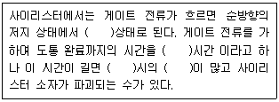
- ON, TURN ON, 스위칭, 전력손실
- ON, TURN ON, 전력손실, 스위칭
- 스위칭, ON, TURN ON, 전력손실
- TURN ON, 스위칭, ON, 전력손실
(정답률: 78%)
4과목: 회로이론 및 제어공학
61. 특성 방정식
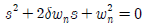
이 부족제동을 하기 위한 값은?- δ = 1
- δ < 1
- δ >1
- δ = 0
(정답률: 76%)
62. 폐루프 전달함수
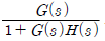
의 극의 위치를 루프 전달함수 G(s)H(s)의 이득 상수 K 의 함수로 나타내는 기법은?- 근궤적법
- 주파수 응답법
- 보드 선도법
- 나이퀴스트 판정법
(정답률: 63%)
63. 다음 진리표의 논리 소자는?
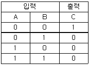
- NOR
- OR
- AND
- NAND
(정답률: 73%)
64. 그림과 같은 블록선도에 대한 등가 종합 전달함수 (C/R)는?
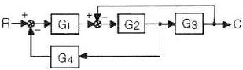
(정답률: 78%)
65. 의 극점과 영점은?
- -2, -2
- -j, -2
- -2, j
- ±j, -2 와 ∞
(정답률: 57%)
66. 의 나이퀴스트 선도를 도시한 것은? (단, k > 0이다. )
(정답률: 71%)
67. 상태 방정식 x(t)=Ax(t)+Br(t) 인 제어계의 특성 방정식은?
(정답률: 64%)
68. 샘플러의 주기를 T라 할 때 s 평면상의 모든 점은 식 z=esT에 의하여 z평면상에 사상된다. s평면의 좌반 평면상의 모든 점은 z평면상 단위원의 어느 부분으로 사상되는가?
- 내점
- 외점
- 원주상의 점
- z평면 전체
(정답률: 75%)
69. 물체의 위치, 각도, 자세, 방향 등을 제어량으로 하고 목표값의 임의의 변화에 추종하는 것과 같이 구성된 제어장치를 무엇이라고 하는가?
- 프로세서 제어
- 서보기구
- 자동조정
- 추종 제어
(정답률: 57%)
70. 어떤 제어계의 전달함수 에서 안정성을 판정하면?
- 안정하다.
- 불안정하다.
- 임계상태이다.
- 알 수 없다.
(정답률: 71%)
71. 그림에서 단자 ab에 나타나는 전압 Vab는 몇 [V]인가?
- 약 2
- 약 4.3
- 약 5.6
- 약 8
(정답률: 62%)
72. 회로에서 단자 a, b 사이에 교류전압 200[V]를 가하였을 때, c, d 사이의 전위차는 몇 [V]인가?
- 46
- 96
- 56
- 76
(정답률: 46%)
73. 블록선도에서 C(s)=R(s) 라면 전달함수 G(s)는?
- 0
- -1
- ∞
- 1
(정답률: 66%)
74. 선로의 임피던스 Z = R+jwL Ω], 병렬 어드미턴스가 Y=G+jwC[℧]일 때, 선로의 저항 R과 콘덕턴스 G가 동시에 0이 되었을 때 전파정수는?
(정답률: 75%)
75. 그림과 같은 4단자망에서 정수 행렬은?
(정답률: 61%)
76. RL 직렬회로에 인 전압을 가할 때 제 5고조파 전류의 실효값은 몇 [A]인가? (단, R=4[Ω], wL=1[Ω]이다.)
- 약 6.25
- 약 8.83
- 약 12.5
- 약 16.0
(정답률: 62%)
77. 의 역 라플라스 변환은?
- 3t2+3e-3t)u(t)
- 4t2+3e-2t)u(t)
- 8t2-3e2t)u(t)
- 8t2+3e-2t)u(t)
(정답률: 62%)
78. 대칭 3상 4선식 전력계통이 있다. 단상 전력계 2개로 전력을 측정하였더니 각전력계의 값이 각각 -301[W] 및 1327[W]이었다. 이때 역률은 약 얼마인가?
- 0.94
- 0.75
- 0.62
- 0.34
(정답률: 49%)
79. 다음 회로의 역회로는? (단, K2=2×103이다.)
(정답률: 63%)
80. 저항 R, 인덕턴스 L, 콘덴서 C의 직렬회로에서 발생되는 과도현상이 진동이 되지 않을 조건은?
(정답률: 53%)
5과목: 전기설비기술기준 및 판단기준
81. 철탑의 강도 계산에 사용하는 이사 시 상정하중의 종류가 아닌것은?
- 수직하중
- 좌굴하중
- 수평 횡하중
- 수평 종하중
(정답률: 69%)
82. 220[V] 저압전로의 절연저항은 몇 [MΩ]이상이어야 하는가?(관련 규정 개정전 문제로 여기서는 기존 정답인 2번을 누르면 정답 처리됩니다. 자세한 내용은 해설을 참고하세요.)
- 0.1
- 0.2
- 0.3
- 0.4
(정답률: 62%)
83. 애자 사용 공사에 의한 고압 옥내배선에 사용되는 연동선의 최소 지름은 몇 [mm2]인가?(오류 신고가 접수된 문제입니다. 반드시 정답과 해설을 확인하시기 바랍니다.)
- 2.5
- 4
- 6
- 8
(정답률: 42%)
84. 옥내 방전등 공사에 대한 설명으로 알맞지 않은 것은?(오류 신고가 접수된 문제입니다. 반드시 정답과 해설을 확인하시기 바랍니다.)
- 관등회로의 사용전압이 400[V] 이상인 경우에는 방전등용 변압기를 설치할 것
- 습기가 많은 곳에 시설하는 경우에는 적절한 방습장치를 할 것
- 관등회로의 사용전압이 400[V] 이상의 저압인 경우는 특별 제 3종 접지공사를 할 것
- 관등회로의 사용전압이 고압이고 관등회로의 동작전류가 10[A]를 넘는 경우는 제 1종 접지공사를 할 것
(정답률: 47%)
85. 저압 옥내간선에서 분기하여 전기사용기계기구에 이르는 저압 옥내 전로에서 저압 옥내간선과 분기점에서 전선의 길이 가 몇 [m] 이하인 곳에 개폐기 및 과전류 차단기를 설치하여야 하는가?
- 3
- 4
- 5
- 6
(정답률: 61%)
86. 가공전선로의 지지물 구성체가 강관으로 구성되는 철탑으로 할 경우 갑종 풍압하중은 몇 [Pa]의 풍압을 기초로 하여 계산한 것인가? (단, 단주는 제외하며 풍압은 구성재의 수직 투영면적 1[m2 에 대한 풍압이다.])
- 588
- 1117
- 1255
- 2157
(정답률: 61%)
87. 태양전지 발전소에 시설하는 태양전지 모듈, 전선 및 개폐기, 기타 기구의 시설에 관한 설명 중 틀린 것은?
- 충전 부분은 노출되지 아니하도록 시설할 것
- 태양전지 모듈에 접속하는 부하측 전로에는 그 접속점에 근접하여 개폐기 또는 부하전류를 개폐할수 있는 기구를 시설 할 것
- 전선은 공칭 단면적 1.5[mm2] 이상의 연동선 또는 이와 동등 이상의 세기 및 굵기의 것일 것
- 태양전지 모듈을 병렬 접속하는 전로에는 전로를 보호하는 과전류 차단기를 시설할 것
(정답률: 64%)
88. 과전류 차단기로 시설하는 퓨즈 중 고압전로에 사용하는 포장 퓨즈는 2배의 정격전류시 몇 분 안에 용단되어야 하는가?
- 2
- 30
- 60
- 120
(정답률: 56%)
89. 직류 전기철도에 선택 배류기를 시설할 때 적합하지 않은것은?
- 전기적 접점은 선택 배류기 회로를 개폐할 때 생기는 아크에 견디는 구조이어야 한다.
- 선택 배류기를 보호하기 위해 적정한 과전류 차단기를 시설하여야 한다.
- 금속제 외함에는 제 3종 접지 공사를 하여야 한다.
- 강제 변류기를 설치하여 전식에 의한 장해를 방지할 수 없는 경우 선택 배류기를 설치하여야 한다.
(정답률: 44%)
90. 제 3종 접지공사의 접지저항은 몇 [Ω]이하로 유지하여야 하는가?(오류 신고가 접수된 문제입니다. 반드시 정답과 해설을 확인하시기 바랍니다.)
- 10
- 50
- 100
- 200
(정답률: 51%)
91. 금속 덕트 공사에 의한 저압 옥내배선 공사 시설에 적합하지 않은 것은?
- 저압 옥내배선의 사용전압이 400[V] 미만인 경우에는 덕트에 제 3종 접지공사를 한다.
- 금속 턱트에 넣은 전선의 단면적의 합계가 덕트의 내부 단면적의 20[%]이하가 되도록 한다.
- 금속 덕트는 두께 1.0[mm] 이상인 철판으로 제작하고 덕트 상호간에 완전하게 접속한다.
- 덕트를 조영재에 붙이는 경우 덕트 지지점간의 거리를 3[m] 이하로 견고하게 붙인다.
(정답률: 56%)
92. 가공 전선로의 지지물에 시설하는 지선의 시설기준에 대한 설명 중 옳은 것은?
- 지선의 안전율은 2.5 이상일 것
- 연선을 사용하는 경우 소선 4가닥 이상의 연선일 것
- 지중 부분 및 지표상 100[cm]까지의 부분은 철봉을 사용 할 것
- 도로를 횡단하여 시설하는 지선의 높이는 지표상 4.5[m] 이상으로 할 것
(정답률: 67%)
93. 저압 옥내배선의 사용전선으로 적합하지 않은 것은?
- 단면적 2.5[mm2] 이상의 연동선
- 단면적 1[mm2] 이상의 미네럴인슈레이션 케이블
- 사용전압 400[V] 미만인 경우 전광표시 장치에 사용한 단면적 0.75[mm2]이상의 연동선
- 사용전압 400[V] 미만인 경우 출퇴 표시등에 사용한 단면적 0.75[mm2] 이상의 다심 케이블
(정답률: 47%)
94. 백열전등 또는 방전등에 전기를 공급하는 옥내전로의 대지 전압은 몇 [V] 이하이어야 하는가?
- 440
- 380
- 300
- 100
(정답률: 73%)
95. 발전소에 시설하여야 하는 계측장치가 아닌것은?
- 발전기의 전압 및 전류
- 주요 변압기의 역률
- 발전기의 고정자 온도
- 특고압용 변압기의 온도
(정답률: 68%)
96. 변전소에서 154[kV]급으로 변압기를 옥외에 시설할 때 취급자 이외의 사람이 들어가지 않도록 시설하는 울타리는 울타리의 높이와 울타리에서 충전부분까지의 거리의 합계를 몇 [m] 이상으로 하여야 하는가?
- 5
- 5.5
- 6
- 6.5
(정답률: 61%)
97. 중성선 다중 접지식으로 전로에 지락이 생겼을 때에 2초 이내에 자동적으로 이를 전로로부터 차단하는 장치가 되어 있는 사용전압 22900[V]인 특고압 가공전선과 식물과의 이격 거리는 몇 [m] 이상이어야 하는가?
- 1.2
- 1.5
- 2
- 2.5
(정답률: 29%)
98. 차량, 기타 중량물의 압력을 받을 우려가 없는 장소에 지중 전선을 직접 매설식에 의하여 매설하는 경우에는 매설 깊이를 몇 [cm] 이상으로 하여야 하는가?
- 40
- 60
- 80
- 100
(정답률: 64%)
99. 계기용 변성기의 2차측 전로에 시설하는 접지공사는?(관련 규정 개정전 문제로 여기서는 기존 정답인 4번을 누르면 정답 처리됩니다. 자세한 내용은 해설을 참고하세요.)
- 고압인 경우 제 1종 접지공사
- 고압인 경우 제 2종 접지공사
- 특고압인 경우 제 3종 접지공사
- 특고압인 경우 제 1종 접지공사
(정답률: 52%)
100. 저압 옥상전선로 시설에 대한 설명으로 옳지 않은것은?
- 전선과 옥상전선로를 시설하는 조영재와의 이격거리를 0.5[m]로 하였다.
- 전선은 상시부는 바람 등에 의하여 식물에 접촉하지 않도록 시설하였다.
- 전선은 절연 전선을 사용하였다.
- 전선은 지름 2.6[mm]의 경동선을 사용하였다.
(정답률: 66%)
B = μ₀ * n * I
여기서, B는 자속밀도, μ₀는 자유공간의 자기유도율(4π × 10^-7), n은 권수, I는 전류이다.
따라서, I = B / (μ₀ * n)
문제에서 주어진 값에 대입하면,
I = 1 / (4π × 10^-7 * 1000) = 795.77 [A]
따라서, 정답은 "" 이다.
이유는 간단하다. 전류의 크기는 권수와 자속밀도에 비례하며, 비투자율이 1000인 철심을 사용하므로 권수는 1000이다. 따라서, 자속밀도가 1[wb/m^2]이 되기 위해서는 전류가 795.77[A]가 필요하다.